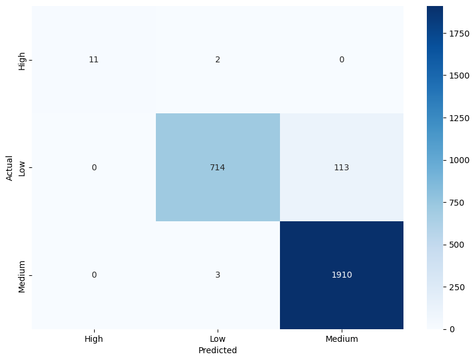
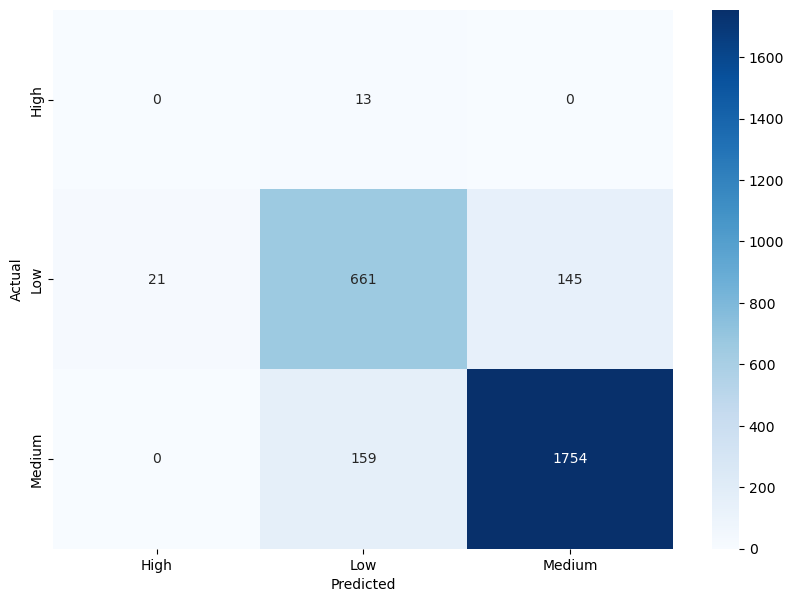

Support Vector Machines (SVMs) are a type of machine learning algorithm used for classification and regression analysis. They are based on the idea of finding the hyperplane that maximally separates different classes in the input data. SVMs are linear separators in the sense that they find a hyperplane that best separates the data into two classes. The hyperplane is chosen such that it maximizes the margin, which is the distance between the hyperplane and the closest points from each class. The points closest to the hyperplane are called support vectors, and they determine the position of the hyperplane. In cases where the data is not linearly separable, SVMs use a technique called the kernel trick to transform the data into a higher-dimensional space, where it becomes linearly separable. The kernel function calculates the dot product between two points in this higher-dimensional space, without actually computing the transformation explicitly. The dot product is critical to the use of the kernel, as it measures the similarity between two points in the transformed space.
There are different types of kernel functions, but two popular ones are the polynomial kernel and the radial basis function (RBF) kernel. The polynomial kernel transforms the data into a space of polynomial features of degree d, and the RBF kernel transforms it into a space of infinite dimensions with a Gaussian-like distribution. Here is an example of taking a 2D point (x,y) and a polynomial kernel with r=1 and d=2 and "casting" that point into the proper number of dimensions: Let's say we have a point (2, 3) and we want to transform it using the polynomial kernel with r=1 and d=2. The polynomial kernel function is given by: K(x, y) = (x^T y + r)^d where x and y are two data points, T denotes the transpose, r is a parameter that controls the influence of higher-order terms, and d is the degree of the polynomial. Plugging in the values, we get: K((2, 3), (x, y)) = (2x + 3y + 1)^2 Expanding this out, we get: K((2, 3), (x, y)) = 4x^2 + 12xy + 9y^2 + 4x + 6y + 1 So, to "cast" the point (2, 3) into the proper number of dimensions, we replace x with 2 and y with 3 in the equation above, which gives us a 6-dimensional vector: (16, 24, 9, 8, 12, 1) Linear SVM: we can see a linear SVM with a separating hyperplane and the support vectors. The margin is the distance between the hyperplane and the support vectors. Kernel SVM: we can see a kernel SVM with an RBF kernel that transforms the data into a higher-dimensional space where it becomes linearly separable. The decision boundary is shown as a contour plot, with the darker areas corresponding to one class and the lighter areas corresponding to the other class.

In this approach, the weight of each word in a document is proportional to its frequency in the document and inversely proportional to its frequency in the corpus. Once the text documents are represented as vectors, SVMs can be used to learn a hyperplane that separates different categories based on the feature vectors. The SVM algorithm tries to find the hyperplane that maximally separates the different categories while minimizing the classification error. The choice of kernel function and hyperparameters such as the cost parameter and the regularization parameter can be tuned to optimize the classification performance. SVMs have been shown to be effective for text classification problems and have been widely used in various applications such as spam filtering, sentiment analysis, and topic classification. However, SVMs can be computationally expensive when dealing with large datasets, and the choice of kernel function and hyperparameters can significantly affect the classification performance.
Support Vector Machines (SVMs) can be used for text classification problems, where the goal is to classify text documents into different categories such as spam/not spam, positive/negative sentiment, or topic classification. The basic idea is to represent each text document as a vector of features and use SVMs to learn a hyperplane that separates different categories. One common approach for text classification is to represent each document as a bag-of-words (BoW) model, where each document is represented as a vector of word frequencies. In this approach, the vocabulary of words is first extracted from the corpus of documents, and each document is represented as a vector where each dimension corresponds to a word in the vocabulary, and the value of each dimension represents the frequency of that word in the document. Another approach is to use the term frequency-inverse document frequency (tf-idf) method to weight the word frequencies based on their importance in the corpus.
- Used data: labelledData.csv
Link to the dataset: Dataset
Link to the Python code: Link to the Python code: Code


To implement an SVM for the above data, we would first need to determine the problem type. Since the data includes a "Risk" column, it suggests that we may be performing a binary classification task where we are trying to predict whether something is high risk or low risk based on the values of the other columns. Next, we would split the data into training and testing sets. This is important to ensure that we have an unbiased estimate of how well our model is performing. We train our model on the training set and then test its performance on the testing set. If we use the same data to train and test our model, it may result in overfitting, where the model performs well on the training data but poorly on the testing data. Once we have split the data, we would preprocess it by scaling the features, as SVMs are sensitive to the scale of the input variables. We could use techniques such as standardization or normalization to scale the features. We would then choose a kernel function for our SVM. The choice of kernel function depends on the nature of the problem and the distribution of the data. In this case, we could start with a linear kernel and then try other kernel functions such as polynomial or RBF kernels.
Results
Looking at the heatmap, we can see that the highest values are in the Methane column, with some relatively high values in the Carbon and Nitrogen columns as well. We can also see that the values in the Risk column are all the same (since it has a constant value of 1.0), and that the values in the FGas column are generally lower than in the other columns. Overall, a heatmap provides a quick and intuitive way to visualize patterns and trends in data, and can be especially useful for identifying outliers or high/low values in a dataset.
SVM without default hyperparameters: he SVC class is used to create an SVM classifier with default hyperparameters, and fit is used to train the classifier on the training data. Finally, predict is used to make predictions on the testing data, and confusion_matrix is used to evaluate the performance of the classifier. The confusion matrix you provided has 3 rows and 3 columns, where each row corresponds to the true class and each column corresponds to the predicted class. The numbers in the matrix represent the number of instances that belong to a particular class. Looking at the matrix: The first row represents instances that truly belong to class 0 (the top row of the data). The second row represents instances that truly belong to class 1 (the middle row of the data). The third row represents instances that truly belong to class 2 (the bottom row of the data). Model accuracy score with default hyperparameters: 0.9571
The confusion matrix shows the number of true positives (TP), false positives (FP), false negatives (FN), and true negatives (TN) for each class. In this case, the rows correspond to the true labels and the columns correspond to the predicted labels. For example, the (1,2) element of the matrix (113) represents the number of samples that were actually in class 1 but were predicted to be in class 2. Model accuracy score with rbf kernel and C=100.0 : 0.9844

Linear Kernel:The first row shows the true positives (TP), false negatives (FN), and false positives (FP) for the first class. The second row shows the TP, FN, and FP for the second class, and the third row shows the TP, FN, and FP for the third class. Looking at the values in the confusion matrix, we can see that the SVM correctly classified 11 samples from the first class, misclassified 2 as the second class, and none as the third class. For the second class, it correctly classified 714 samples, misclassified 113 as the third class, and none as the first class. For the third class, it correctly classified 1910 samples, misclassified 3 as the second class, and none as the first class. Overall, the model seems to perform well as it correctly classified the majority of the samples in each class. Model accuracy score with linear kernel and C=100.0 : 0.9786
Sigmod Kernel:In this case, the sigmoid kernel does not perform well, as all predictions are being assigned to the majority class. This suggests that the sigmoid kernel may not be appropriate for this dataset. Model accuracy score with sigmoid kernel and C=100.0 : 0.8772
Conclusion
Above are the accuracy scores obtained by training SVM models with different kernels and hyperparameters on the same dataset. The accuracy score measures the proportion of correctly classified samples out of the total number of samples in the test set. Here's a brief explanation of each line: "Model accuracy score with default hyperparameters: 0.9571": This refers to the accuracy score obtained by training an SVM model with default hyperparameters, which uses the RBF (Radial Basis Function) kernel. The accuracy is 0.9571, meaning that the model correctly classified 95.71% of the test samples. "Model accuracy score with rbf kernel and C=100.0: 0.9844": This refers to the accuracy score obtained by training an SVM model with the RBF kernel and C=100.0 hyperparameter. The accuracy is 0.9844, meaning that the model correctly classified 98.44% of the test samples. Increasing the value of C allows for more complex models that better fit the training data. "Model accuracy score with linear kernel and C=100.0: 0.9786": This refers to the accuracy score obtained by training an SVM model with the linear kernel and C=100.0 hyperparameter. The accuracy is 0.9786, meaning that the model correctly classified 97.86% of the test samples. The linear kernel is useful when the data can be separated well by a linear boundary. "Model accuracy score with sigmoid kernel and C=100.0: 0.8772": This refers to the accuracy score obtained by training an SVM model with the sigmoid kernel and C=100.0 hyperparameter. The accuracy is 0.8772, meaning that the model correctly classified 87.72% of the test samples. The sigmoid kernel can be useful when the data is not easily separable by a linear or RBF kernel, but in this case it did not perform as well as the other kernels.